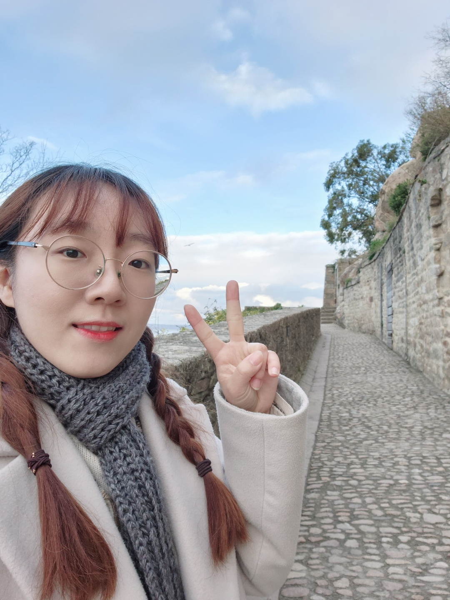

<section class="aboutme">
    <div class="post_content">
        
        <h3>
            SooBin Lim 
        </h3>
        <p>
            I am a first-year Ph.D. student working in the IIIXR Lab at Kyunghee University, advised by Dr. HyeongYeop Kang.
        </p>
        <hr/>
        <h3>
        Research Fields
        </h3>
            <p>
            - VR Experience <br>
            - Character Animation
        </p>    

        <hr/>
        <h3>
            Education
        </h3>
        <p>
            B.S., Software convergence, Kyung Hee University, 2018.03 - 2022.08
        </p>
        <hr/>
        <h3>
            Awards
        </h3>
        <li><a href="https://youtu.be/79LV9N-yP1c">2021 Realistic Media Game Competition</a></li>
        <li><a href= https://youtu.be/fi4nI1JXpIo>2021 Pearl Abyss × KHUSWC</a></li>
        <li><a href="https://swf.khu.ac.kr/swfest_game_2020/33">2020 KHU SW Festival</a></li>
        <li><a href="https://thon.khlug.org/about/2020">2020 KHTHON</a></li>
       
        <hr/>
    </div>
</section>
